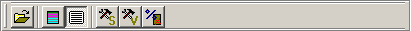
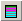

Standard Tool Bar
This tool bar contains general options.
 Click this button to open a sequential code file*D162K7.
Permite abrir un fichero con código secuencial*D162K7.
 Habilita la opción de colorear los bloques básicos*D162N8 en el código.
Muestra/oculta el código secuencial*D162K7 cargado de fichero.
Abre la ventana de Configuración de la Máquina Superescalar*D162K2, con la que se pueden modificar sus parámetros más importantes.
Abre la ventana de Configuración de la Máquina VLIW*D162K3, con la que se pueden modificar sus parámetros más importantes.
Permite establecer el porcentaje de fallos de caché de datos al realizar una instrucción de carga (LOAD). 0 significa que no habrá ningún fallo y 100 significa que todos los accesos producen fallo.
{bml bm2.BMP} Click this button to open a sequential code file*D162K7.
{bml bm3.BMP} Click this button to colour the basic blocks*D162N8 in code window.
{bml bm4.BMP} Click this button to show/hide the sequential code*D162K7 loaded from a file.
{bml bm5.BMP} Click this button to open the Superscalar Configuration*D162K2 window.
{bml bm6.BMP} Click this button to open the VLIW Configuration*D162K3 window.
{bml bm7.BMP} Click this button to set the data cache miss rate when you use a LOAD instruction. Use 0 for no misses and 100 for direct main memory access.
{bml bm8.BMP} Click this button to create a blank VLIW code*D162K9.
{bml bm9.BMP} Click this button to load a VLIW code from a file*D162L0.